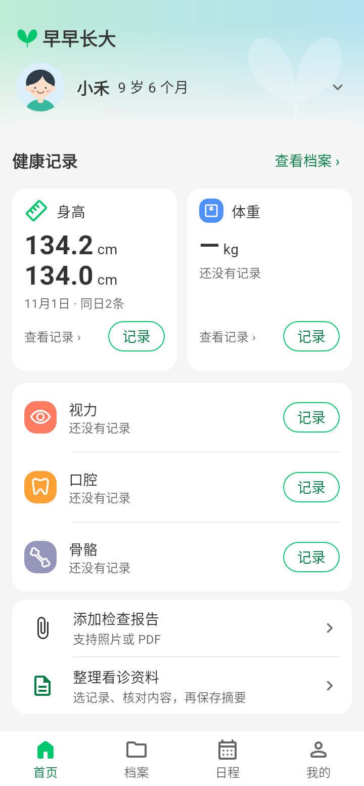
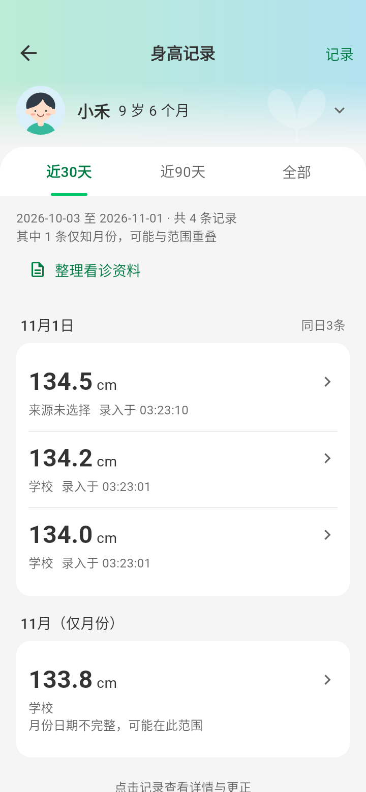

小变化，随手记
身高、体重、视力、口腔和骨骼情况，直接记录，也可以回看以往的变化。
从一次测量，到一张报告，一件件看似细小的事，都是孩子成长的印记。早早长大，陪你把它们好好记录下来。

把散落在日常中的记录、报告和待办放在一起，需要的时候更容易找到。
身高、体重、视力、口腔和骨骼情况，直接记录，也可以回看以往的变化。
保存检查报告和相关记录，为每个孩子整理一份属于自己的健康档案。
记下待办和需要跟进的事项，让检查之后的关心，也有地方安放。

每个孩子都有自己的节奏。留下当时的记录和资料，之后查找、整理看诊资料时，就不必再从零开始。
我们正在打磨 Android 体验。正式发布和下载信息确定后，再与大家见面。
早早长大用于整理家庭健康记录，不能替代专业医疗建议。